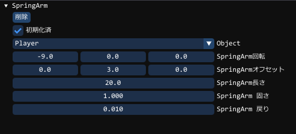

ComponentSpringArmとは
オブジェクトとオブジェクトをスプリング状の棒で結ぶ役割をします利用方法としましては、片方のオブジェクトをプレイヤー、もう片方をカメラとし、
それをつなげて、ある一定距離で追跡カメラで操作するなどに利用できます。
GUIには、次のような設定項目があります。

| Object | 追従するオブジェクトを選択できます |
|---|---|
| SpringArm回転 | X軸(横軸[上下に回転])、Y軸(縦軸[左右に回転])、Z軸(無視)での回転角度を意味します |
| SpringArmオフセット | オブジェクトの中心点より、どれだけ移動した地点にArmをつけるか |
| SpringArmの長さ | オブジェクトどうしの距離を示します |
| SpringArmの固さ | 棒自体の固さです固いほど短くなったりぶれたりしません |
| SpringArmの戻り | 戻り量の反動が大きいとぶれも大きくなります |
ComponentSpringArmの使用方法
Armの作成方法の例
以下はオブジェクトにSpringArmをつけていますオブジェクトは、あくまでObjectの方向を向きます。
基本的にはカメラにつけて、オブジェクトを追跡するなどに使えます
auto arm = obj->AddComponent<ComponentSpringArm>();
SpringArmの取得方法
if (auto arm = obj->GetComponent<ComponentSpringArm>())
{
// objにSpringArmコンポーネントがある場合はこのスコープでarmとして使用することができます
}
SpringArmの長さの設定と取得
arm->SetSpringArmLength( 20.0f ); // SpringArmの長さを20.0fにします
float len = arm->GetSpringArmLength(); // lenにSpringArmの長さが入ります
SpringArmのターゲットのオブジェクトの設定
arm->SetSpringArmObject( target_object ); // target_objectをターゲットにします。
arm->SetSpringArmObject( オブジェクトの名前 ); // オブジェクトの名前でもターゲットにできます。
SpringArmのターゲットのオブジェクトの取得
auto obj = arm->GetSpringArmObject(); // objにSpringArmのターゲットが入ります。
SpringArmのターゲットの中心からのずれの指定
arm->SetSpringArmOffset( { 0, 5, 0 } ); // ターゲットの少し上にArmをつなげます